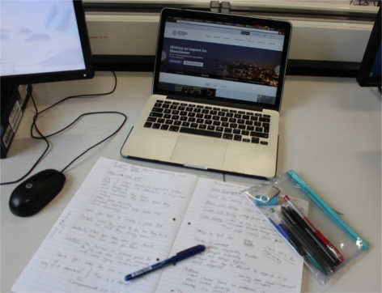

The Information & communications department is a field in which is swiftly growing due to the vast technological advancements in which are being placed in front of us on a daily basis. All 3 courses emphasise on working on relationships between people and information and technology itself.
You will be learning a mixture of management, creative and technical skills as well as high level of knowledge in which employers are looking for. This will give you an excellent chance to help further a career down this professional pathway. Each of the three different pathways include both individual and group work to enhance your skills and abilities given different situations and circumstances.
There are three different pathways in which students can choose within the course, each covering key areas along with relating to one another and these are Web development, Information & communications technology and Digital media & communications:
This degree route focuses on the front and back end development of a website. You will be learning about the theoretical and practical aspects of how websites are created and function. Right at the heart of the of website development is HTML, CSS and JavaScript, all of which you will learn about in great depth so that you will eventually gain the ability to create and build your own professional websites.
You will be required to complete both individual and group work to test your abilities working under pressure no only from yourself but your group mates. Working within groups will help you learn what it’s like to work with and for a client meaning you have to be able to provide for their specific needs. This course is an excellent choice for those who are looking to advance in their ability in building websites and look to send you a direction in which to further your career within the field.
This degree is aimed at those with a creative mind who are seeking to follow a career path into the different broadcasting industries: Television, radio, film and other media forms.
Studying this course will mean that investigation will be made into the manipulation and creating of digital content for both media technologies and communication.
Due to the rapid growth within the digital media industry, this course offers a wide range of potential jobs opportunities at the end of it. This can be working for a broadcasting organisation such as television and radio, however there are also opportunities to work in multimedia for other types of organisations such as the educational sector and others like travel and tourism. Employers are seeking skilled employees to help improve their firms and the skills gained from undertaking this course are valued heavily by companies within these sectors.
This course helps incorporate the business aspects of IT and how they can be used to in social and organisational communication as well as developing coding skills to gain knowledge on the front-end production of a website.
You will gain an in depth view of how organisations can use the changes in social technology and communication to their advantages and how they can keep up to date with the rate in which society is changing. This degree will work a lot on how well you as a student are able to work as part of a team to where they will learn the importance of organisation and time management.
The group work will help prepare you for the different situations that you’ll be in within an organisation and there is every chance you will be working with a team. This course offers a mixed range of IT skills for you to learn through units each covering the basis of technology and how we use it to communicate with one another.
If you are looking to study or are currently studying within the Information & Communications department then there are various different bits of equipment which are essential to succeed on the course. Certain bits of equipment are more important than others purely due to the nature of the course itself.
Seeing as though you are looking at a degree related to ICT. A Laptop/PC/Mac is extremely beneficial to any course you take within the information & Communications department, although not entierly essential. Much of the coursework will be needed to be done on a computer and so almost every aspect of work will be based around computers and the idea of them. The majority of your work would be conducted and saved on these devices if you own one, this can then help keep you and your work organised. As well as this, some lectures will require you to work on devices during the lecture. Laptops will be provided if you don't own one but will surely help you feel more comfortable with your work if you do own one.
Pretty self explanatory really... you're going to need one to keep in contact with friends you make along the way. As well as answering frequent phone calls from your worried Mum during freshers week.
On top of this, smart phones are also extremely great in keeping up to date with your University emails, checking your timetable and the camera on some of them can even be so good you can use them for your coursework.
You will probably leave it in the back of one of the University computers the majority of the time but they're handy little pieces of equipment. It is advisable to have one with a larger amount of storage space due to large amounts of work. It will save you many hours of stressing over lost work if any problems occur with your computer and could ultimately be a life saver if any of your work accidentally gets wiped.
Although you may think a pencil case and its equipment isn’t too necessary, it will be needed more than you’d think. If you decide to take up the Website Development module then you’ll need this equipment to help with creating designs for your projects. All of this will also be needed during lectures as writing down notes is essential for keeping up to date with your work.
This goes hand in hand with the pencil case and all of its equipment. You will need this to contain all of your notes and drawn up designs. However, it may not be seen as too important as many students decide to use their laptops/tablets to type up their lecture notes. Regardless, a few of these are still absolutely essential, you never know when you’re going to need to write some useful information down.
The Multimedia Resource Labaratory (commonly known as the MRL) is the main hub for the Information & Communications students. This is where you will be spending most of your time during your stay at the University. Lectures, workshops and seminars will mostly be held here. It's home to all of the Information & Communications students. The reason why is because the main hub contains big, shiny Apple macs as well as other seperate rooms filled with computers for classes, and if they're free your personal use.
Along with these suites there is also a small office which is managed by a technician. Within the office, there are many different cameras and equipment available to loan for a period between 24-72 hours depending on the equipment type. It contains audio equipment, DSLR cameras and handheld recorders for students to borrow to help with their studies.
There is also a large variety of magazines within the MRL that are available to read. The majority of these are related to the course and so it allows students to try and look up anything that they may be stuck with or that they may be interested in the read to either pass the time or learn something new.
All of this makes the MRL a comfortable working environment with tutors and lecturers from the course often being there and so help is almost always at hand.
The idea of our student profile videos is to give you a brief idea on what life as a university student is like. Gaining an insight from your peers can be extremely helpful, espescially when leaving your precious home town to come to a massive city like Manchester can be quite scary.
Take a look at the video below and hear what Karl Evans has to say during his first year at Manchester Metropolitan University.
The idea of our student profile videos is to give you a brief idea on what life as a university student is like. Gaining an insight from your peers can be extremely helpful, espescially when leaving your precious home town to come to a massive city like Manchester can be quite scary.
Take a look at the video below and hear what Sam Marsh has to say during his second year at Manchester Metropolitan University.